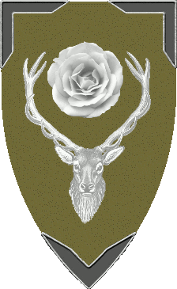

| Übersicht,
Allgemeines |
|
Wetter?
|
Wurzelsepp
 |
Gibt es da eigentlich etwas neues bezüglich der (Wieder-)Einführung von Wetterauswirkung? So ganz ohne find ich schade - ausserdem: Ich will´s schwieriger ! *g* |
05.01.06 15:02

|
|
| Titania Greenleafxxx (RIP) |
ja, die Abschaffung fand ich auch schade ;) |
05.01.06 18:11
|
|
Tilion
 |
ich glaube, dann gib´s nen Aufstand, wenn das wieder eingeführt wird^^ jedenfalls in der alten krassen Form... |
05.01.06 18:57
|
|
Wurzelsepp
|
Muss ja nicht so extrem sein (z.B. dass es immer schlimmer wird je länger das schlechte Wetter hält - also das könnte man v.m.a. weglassen). Öh...soll ich das jetzt ins Vorschlagsforum packen? Eigentlich wollt ich ja nur wissen, ob jemand was darüber weiss... |
05.01.06 20:25
|
|
| Sâlía Séregon (RIP) |
naja, ich denke nicht, dass es wiederkommt. obwohl es ja gut war, finde ich... es müsste nur halt plötzlich auftreten und nicht sich so langsam entwickeln, wie es das vorher tat |
05.01.06 20:29
|
|
| Lancelot (RIP) |
die idee war gut, aber mehr auch nicht. also ich brauchs nicht, wir haben ja jahreszeiten, das reicht |
05.01.06 20:42
|
|
| Slobodan de Moré (RIP) |
Die Diskussion gabs schon x-mal zu Genüge, denke es ist alles gesagt. |
05.01.06 21:51
|
|
| Abel von Pavenacht (RIP) |
Damit auch ja alles schön statisch und berechenbar bleibt, ja?
Von mir aus soll es noch schlimmere Auswirkungen haben ... Weicheier, allesamt. Ich will den bösen SL zurück ;) |
05.01.06 22:26
|
|
| Djungo Fêza (RIP) |
*kann sich diesen letzten Worten nur anschließen* :) |
05.01.06 23:25
|
|
| Titania Greenleafxxx (RIP) |
Abel hat recht, noch mehr Gemeinheiten sind besser*fg* |
06.01.06 0:41
|
|
| Rollblack (RIP) |
Ich mag die Vernichtung der Welt und das Ender von Splitterworld haben :P |
06.01.06 4:50
|
|
| Sine (RIP) |
warum wollt ihr ganz alleine in einer welt voller ruinen hocken ?
ich weiss ja das ihr die ganze zeit dran arbeitet das es so aussieht .. aber wenn es denn so aussieht .. was wollt ihr dann machen ?
ne mal spass beiseite .. wird das wetter wieder eingeführt, wird jede stadt zur 50k stadt ... es geht einfach nicht soviel zu lagern um alle eventualitäten abzudecken. und unterversorgung ist letztendlich zu heftig als das man das einfach mal so hinnehmen könnte .. da sind ganz schnell mal 10 tausende ap´s im arsch |
06.01.06 8:03
|
|
Übersicht,
Allgemeines
|